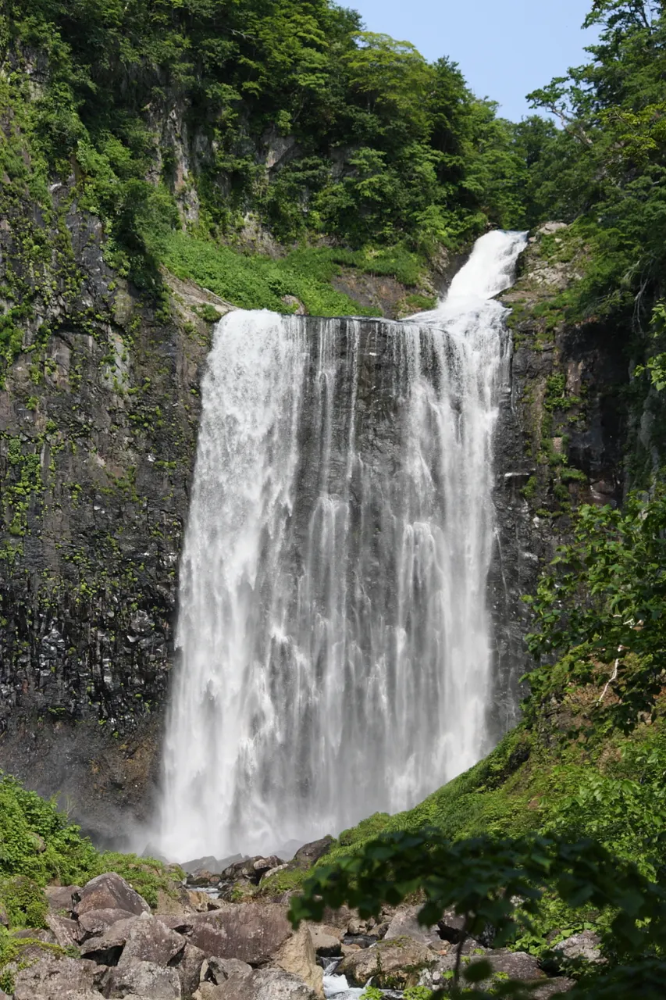
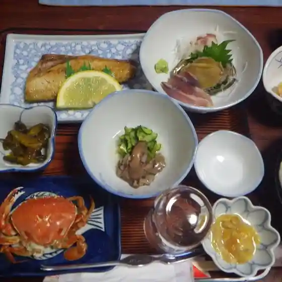
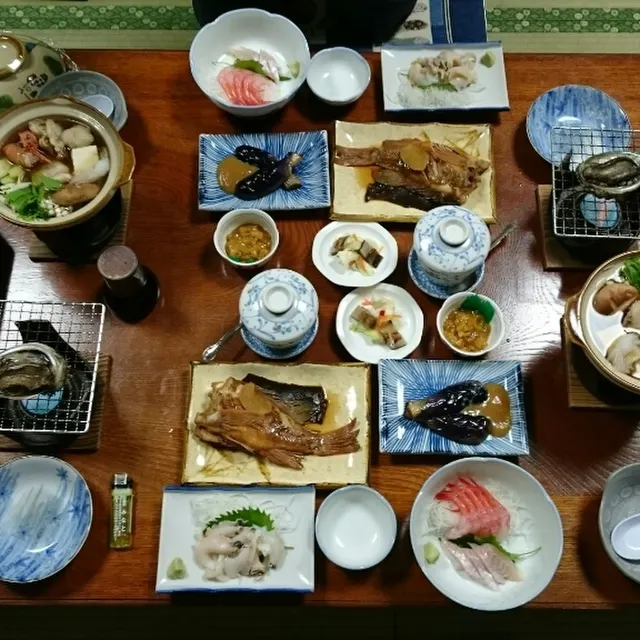
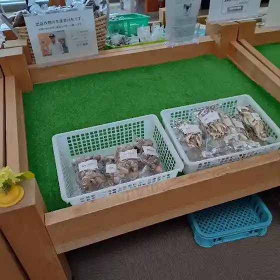
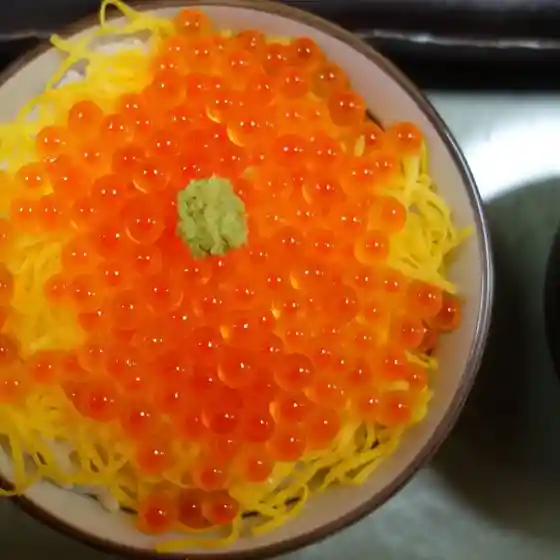
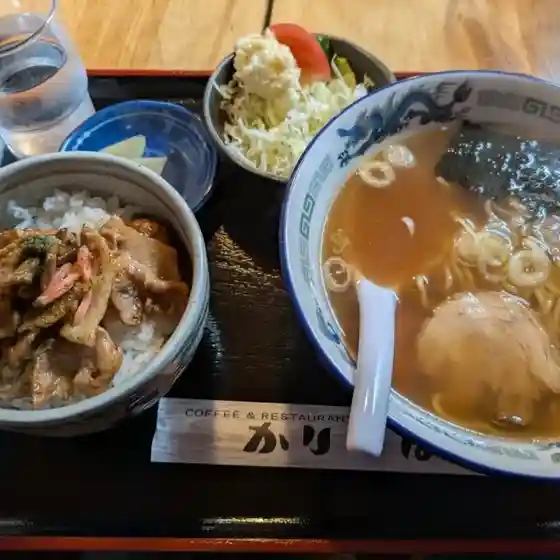

Shimamaki
Shimamaki · Hokkaido
Shimamaki
Highlighted on the Hokkaido map.

Stay
島牧ユースホステル
Shimamaki Youth Hostel
Youth hostel in Shimamaki, Hokkaido.
Dining
松永

Matsunaga
宮内温泉旅館

Miyauchi Onsenryokan
民宿みなと

Minshuku Minato
道の駅 よってけ!島牧

Michi No Eki Yotteke ! Shima Maki
天

Ten
民宿浜風

Minshuku Hamakaze
民宿ヤンサ

Minshuku Yansa
かりんぱ

Karinpa
高田旅館
Takada Ryokan
高島旅館
Takashima Ryokan
モッタ海岸温泉旅館
Motta Kaigan Onsenryokan